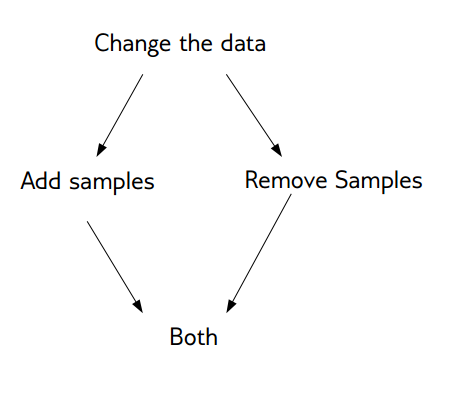
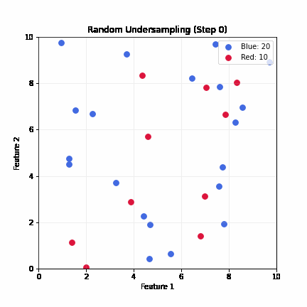
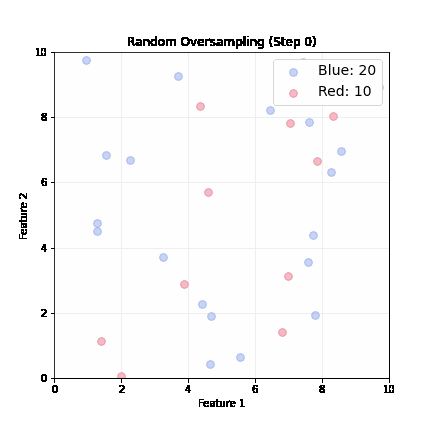
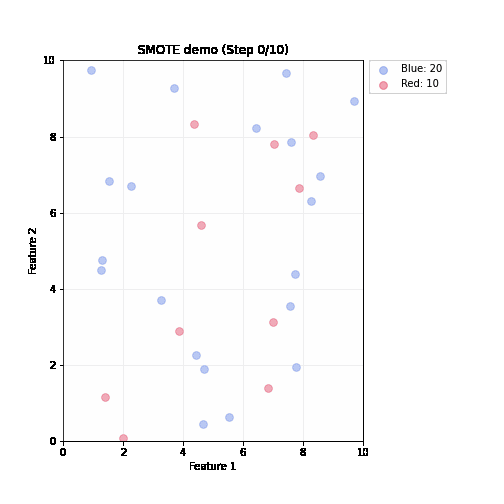

Imbalanced Data
Huanfa Chen - huanfa.chen@ucl.ac.uk
13/03/2026
Recap on W2 Supervised Learning Metrics
Limitation of accuracy (Accuracy paradox)
- Scenario: Data with 90% negatives (imbalanced data)
- A majority strategy that predicts all as negative gets 90% accuracy, but this is useless.
- Different models can have the same accuracy (0.9) but make very different types of errors.
{kind=link}
Precision, Recall, and their trade-off
- Precision: \(\frac{TP}{TP+FP}\). Among predicted positives, how many are actually positive.
- Recall (Sensitivity): \(\frac{TP}{TP+FN}\). Among actual positives, how many are correctly predicted.
Picking a metric
- Real-world problems are rarely balanced.
- Accuracy is rarely what we want.
- Find the right criterion; decide between emphasis on recall or precision.
- Identify which classes are important.
Metric for breast cancer detection
- “1”: malignant/cancer (37.3%)
- “0”: benign/no cancer (62.7%)
- Missing a cancer (FN) is much worse than a false alarm (FP)
- So, we care more about recall than precision or accuracy.
- A model with high recall is preferred, even if it has lower precision.
Imbalanced data is common
- Classification often has asymmetric costs or data imbalance
- Need metrics and models that respect imbalance
This week
Objectives
- Understand the sources of imbalanced data
- Learn methods for handling imbalanced data
Two Sources of Imbalance
- Asymmetric data prevalence
- Asymmetric cost between errors
- Example: In medical diagnosis, missing a disease (FN) is much worse than a false alarm (FP)
- … even if class prevalence is balanced, the cost of errors is not symmetric
Methods for selecting imbalanced data
- Select evaluation metrics (What do you want to optimise?)
- Adjust decision thresholds
- Change class-weights
- Resample data
Select evaluation metrics
- Accuracy paradox: accuracy is misleadingfor imbalanced data
- Use precision or recall
Adjust thresholds
- Most models output probabilities (0-1). Default threshold T = 0.5
- If p(class=1) > T, predict Class 1; else predict 0
- Tuning T shifts the balance between precision and recall
Precision-Recall Curve with varying thresholds
{kind=link}
Tuning Threshold with Cross-Validation
- RF classifiers don’t support threshold tuning, so we use
TunedThresholdClassifierCVfromsklearnto tune threshold with CV
from sklearn.datasets import load_breast_cancer
from sklearn.ensemble import RandomForestClassifier
from sklearn.metrics import recall_score
from sklearn.model_selection import StratifiedKFold, train_test_split
from sklearn.model_selection import TunedThresholdClassifierCV
import numpy as np
# Load data: 1 = malignant, 0 = benign
data = load_breast_cancer(as_frame=True)
X = data.data
y = (data.target == 0).astype(int)
# Train/test split
X_train, X_test, y_train, y_test = train_test_split(
X, y, test_size=0.2, random_state=42, stratify=y
)
# Cross-validation with threshold tuning
cv = StratifiedKFold(n_splits=5, shuffle=True, random_state=42)
thresholds = np.arange(0.1, 1.0, 0.1)
# Tune threshold to maximise recall using CV
rf = RandomForestClassifier(n_estimators=100, random_state=42)
tuned_rf = TunedThresholdClassifierCV(
estimator=rf,
scoring="recall",
thresholds=thresholds,
cv=cv
)
tuned_rf.fit(X_train, y_train)
y_pred = tuned_rf.predict(X_test)
test_recall = recall_score(y_test, y_pred, pos_label=1, zero_division=0)
optimal_thresh = tuned_rf.best_threshold_
print(f"Thresholds tested: {thresholds.min():.1f} to {thresholds.max():.1f}, step length = 0.1")
print(f"Optimal threshold: {optimal_thresh:.1f}")
print(f"Test recall at optimal threshold: {test_recall:.4f}")Thresholds tested: 0.1 to 0.9, step length = 0.1
Optimal threshold: 0.1
Test recall at optimal threshold: 1.0000Change class-weights
- Many classifcation algorithms use a weighted loss function in model training (or similar mechanisms) to handle imbalanced data
- \(L = \frac{1}{n} \sum_{i=1}^{n} w_{y_i} \cdot \ell(y_i, \hat{y}_i)\)
- Weight indicates importance. The weight can be set for a class or individually for each sample.
- If weight for a class is set higher, model training will penalise misclassifying that class more heavily.
- Can use cross-validation to tune class weights
Class-Weights in tree-based methods
{kind=link}
Resampling
Resample data
- Resampling modifies the training data to balance classes.
- Random undersampling: drop majority samples until balanced
- Random oversampling: repeat minority samples until balanced
- SMOTE: create synthetic minority samples by interpolating between existing ones
- Ensemble resampling: train multiple models on different balanced subsets and aggregate predictions
Basic Approaches

- Change the training procedure
- Modify data via sampling
Random Undersampling
- Drop majority samples until balanced
- Very fast; dataset shrinks to ~2x minority class size
- Problem: can lose majority samples; unstable for small datasets

Random Oversampling
- Randomly pick up a minority sample, duplicate it, until balanced
- Dataset grows; slower training

SMOTE (Synthetic Minority Oversampling Technique)
- Steps (repeated until balanced)
- Randomly pick up a minority sample A, find its k nearest minority neighbors based on feature distance
- Randomly select one neighbor B
- Create a synthetic sample by interpolating between A and B

Advantages of SMOTE (compared to random oversampling)
- Linear interpolation: synthetic samples are created on the line between two existing minority samples
- No duplication: it generates new data rather than just duplicating existing ones
- Better generalisation*: synthetic samples are created in the feature space
Variants of SMOTE
- Borderline-SMOTE: only create synthetic samples near the decision boundary
- ADASYN: adaptively create more synthetic samples in harder-to-learn regions
- SMOTE-NC: handles mixed numerical and categorical features
- SMOTE-Tomek: combines SMOTE with under-sampling techniques to clean up noise and overlapping samples
Resampling in practice: when should we apply resampling?
- Resampling should be applied after train-test split, and only on the training data
- Resampling is only applied to training data, not test data
- Test data should reflect real-world distribution; resampling test data would give an unrealistic evaluation of model performance
Scikit-learn not support resampling
- Sklearn doesn’t support resampling in its API; sklearn’s pipelines transform X only and cannot resample y
- Need to do it manually or use imbalaned-learn extension
Imbalance-Learn
- Library: http://imbalanced-learn.org
- To install:
pip install -U imbalanced-learn - Extends sklearn API with samplers and pipelines
sklearn pipelines (no resampling)
# train/test split
X_train, X_test, y_train, y_test = train_test_split(
X, y, test_size=0.2, random_state=42, stratify=y
)
# sklearn Pipeline: imputation → normalisation → classifier (no resampling)
sklearn_pipeline = Pipeline([
('imputer', SimpleImputer(strategy='median')),
('scaler', StandardScaler()),
('clf', RandomForestClassifier(n_estimators=100, random_state=42))
])
sklearn_pipeline.fit(X_train, y_train)
y_pred = sklearn_pipeline.predict(X_test)
print(f"Recall (malignant=1): {recall_score(y_test, y_pred, pos_label=1):.4f}")sklearn pipelines with resampling
- Sampler only runs during fit, NOT at prediction
- This is achieved by
from imblearn.pipeline import Pipeline
from imblearn.pipeline import Pipeline as ImbPipeline
from imblearn.under_sampling import RandomUnderSampler
# imblearn Pipeline: imputation → normalisation → undersampling → classifier
imb_pipeline = ImbPipeline([
('imputer', SimpleImputer(strategy='median')),
('scaler', StandardScaler()),
('sampler', RandomUnderSampler(random_state=42)),
('clf', RandomForestClassifier(n_estimators=100, random_state=42))
])
# Sampler only runs during fit, NOT at prediction time
imb_pipeline.fit(X_train, y_train)
y_pred = imb_pipeline.predict(X_test)
print(f"Recall (malignant=1): {recall_score(y_test, y_pred, pos_label=1):.4f}")Ensemble resampling
- Random resampling separately per estimator in ensemble
- Example: Balanced bagging or balanced random forest
- Easy with imblearn
BalancedBaggingClassifier(sklearn API compatible)
Easy Ensemble with imblearn
- Bag of Boosted Learners; by default using AdaBoostClassifier as base estimator
- Trains each tree on a different under-sampled dataset
- As cheap as undersampling, but much more powerful than undersampling alone, as it prevents overfitting
Summary
- Imbalanced classification is common; accuracy is often misleading
- Methods for handling imbalance: adjust metrics, thresholds, class weights, resample data
- Resampling should only be applied to training data, not test data
- SMOTE and Ensemble resampling are more powerful than random undersampling or oversampling.

© CASA | ucl.ac.uk/bartlett/casa